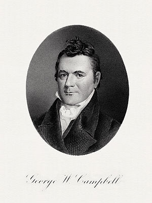

Search Wikipedia
Go
Main page
Contents
Featured content
Current events
Random article
Donate to Wikipedia
Wikipedia store
Interaction
Help
About Wikipedia
Community portal
Recent changes
Contact page
Tools
What links here
Related changes
Upload file
Special pages
Permanent link
Page information
Wikidata item
Print/export
Create a book
Download as PDF
Printable version
In other projects
Wikimedia Commons
MediaWiki
Meta-Wiki
Wikispecies
Wikibooks
Wikidata
Wikinews
Wikiquote
Wikisource
Wikiversity
Wikivoyage
Languages
Simple English
العربية
Bahasa Indonesia
Bahasa Melayu
Bosanski
Български
Català
Čeština
Dansk
Deutsch
Eesti
Ελληνικά
Español
Esperanto
Euskara
فارسی
Français
Galego
한국어
עברית
Hrvatski
Italiano
ქართული
Latviešu
Lietuvių
Magyar
Nederlands
日本語
Norsk bokmål
Norsk nynorsk
Polski
Português
Română
Русский
Slovenčina
Slovenščina
Српски / srpski
Srpskohrvatski / српскохрватски
Suomi
Svenska
ไทย
Tiếng Việt
Türkçe
Українська
中文
Complete list
From today's featured article
 The USS Constellation captured the French L'Insurgente in a single-ship action between the frigates on 9 February 1799. The previous year, French privateering attacks against American vessels had led to the undeclared Quasi-War. Four US naval squadrons were sent to the Caribbean with orders to seize armed French vessels and prevent attacks on American ships. The squadron under Commodore Thomas Truxtun was on assignment in the waters between Puerto Rico and Saint Kitts when his flagship Constellation, cruising independently, met and engaged L'Insurgente, commanded by Michel-Pierre Barreaut. After chasing the French ship through a storm, Truxtun forced an engagement. The French frigate surrendered after 74 minutes with heavy casualties; the Americans sustained only a few casualties. L'Insurgente was taken to Saint Kitts and commissioned into the United States Navy as USS Insurgent. The action was the first victory over an enemy warship for the newly formed navy, and Truxtun was praised by the American government and public. (Full article...)
The USS Constellation captured the French L'Insurgente in a single-ship action between the frigates on 9 February 1799. The previous year, French privateering attacks against American vessels had led to the undeclared Quasi-War. Four US naval squadrons were sent to the Caribbean with orders to seize armed French vessels and prevent attacks on American ships. The squadron under Commodore Thomas Truxtun was on assignment in the waters between Puerto Rico and Saint Kitts when his flagship Constellation, cruising independently, met and engaged L'Insurgente, commanded by Michel-Pierre Barreaut. After chasing the French ship through a storm, Truxtun forced an engagement. The French frigate surrendered after 74 minutes with heavy casualties; the Americans sustained only a few casualties. L'Insurgente was taken to Saint Kitts and commissioned into the United States Navy as USS Insurgent. The action was the first victory over an enemy warship for the newly formed navy, and Truxtun was praised by the American government and public. (Full article...)
Recently featured: The Good Terrorist Johnson Creek (Willamette River) Cliff Clinkscales Archive By email More featured articles...
Did you know...
.jpg) Pamela Cunningham Copeland at Mt. Cuba
Pamela Cunningham Copeland at Mt. Cuba
- ... that Pamela Cunningham Copeland (pictured) was honored by the Garden Club of America for her vision in preserving rare and endangered plants at Mount Cuba?
- ... that drawing the graphic novel diary Dendō helped Brittany Long Olsen cope with "raw and emotional" moments on her LDS mission in Japan?
- ... that "Wär Gott nicht mit uns diese Zeit", a hymn by the Protestant reformer Martin Luther based on Psalm 124, appears in the current Protestant hymnal only partly, within stanzas from a colleague's hymn?
- ... that an interactive exhibit about the life and work of David Hawkins was called "Cultivate the Scientist in Every Child"?
- ... that at the establishment of Bahía Portete National Natural Park, Colombian president Juan Manuel Santos said, "Biodiversity is to Colombia what oil is for the Arabs"?
- ... that Sophie Molineux won the inaugural Betty Wilson Young Cricketer of the Year Award at the 2017 Allan Border Medal Ceremony?
- ... that historical comet observations in China as far back as 12 BC have been used to study changes in the brightness of Halley's Comet?
In the news
.jpg) Benjamin Moukandjo
Benjamin Moukandjo
- In association football, the Africa Cup of Nations concludes with Cameroon defeating Egypt in the final (man of the match Benjamin Moukandjo pictured).
- Protests in Romania grow over the Romanian government's proposals to decriminalize certain corruption cases.
- In American football, the New England Patriots defeat the Atlanta Falcons to win Super Bowl LI, the first to go into overtime.
- The United Nations releases a report stating that the Myanmar Army has committed serious human rights violations against the Rohingya people, including mass killings, systematic sexual violence, and the killing of children.
On this day...
February 9
,_c._1850_after_1844_original_-_DSC03235.jpg) John Quincy Adams
John Quincy Adams
John Quincy Adams
- 1825 – After no presidential candidate received a majority of electoral votes, the United States House of Representatives elected John Quincy Adams (pictured) president.
- 1920 – The Svalbard Treaty was signed, recognising Norwegian sovereignty over the Arctic archipelago of Svalbard, but all signatories were also given equal rights to engage in commercial activities on the islands.
- 1943 – World War II: Allied forces declared Guadalcanal secure, ending the Guadalcanal Campaign as a significant strategic victory for Allied forces fighting Japan in the Pacific War.
- 1969 – The Boeing 747 made its first flight, with test pilots Jack Waddell and Brien Wygle at the controls and Jess Wallick at the flight engineer's station.
- 1996 – Breaking a seventeen-month ceasefire, the Provisional Irish Republican Army detonated a powerful truck bomb in Canary Wharf, London, killing 2 people and injuring more than 100 others.
Today's featured picture

George W. Campbell (1769–1848) was an American statesman who served as a U.S. Representative, Senator, Tennessee Supreme Court Justice, and U.S. Ambassador to Russia. Appointed fifth United States Secretary of the Treasury by James Madison, he faced national financial disorder brought on by the War of 1812. Campbell was unsuccessful in his efforts to raise enough money through government bond sales and he resigned after only eight months in office, disillusioned and in bad health.
Engraving: Bureau of Engraving and Printing; restoration: Andrew Shiva
Recently featured: Oenothera biennis The Magpie Portsmouth Cathedral interior
Archive More featured pictures...